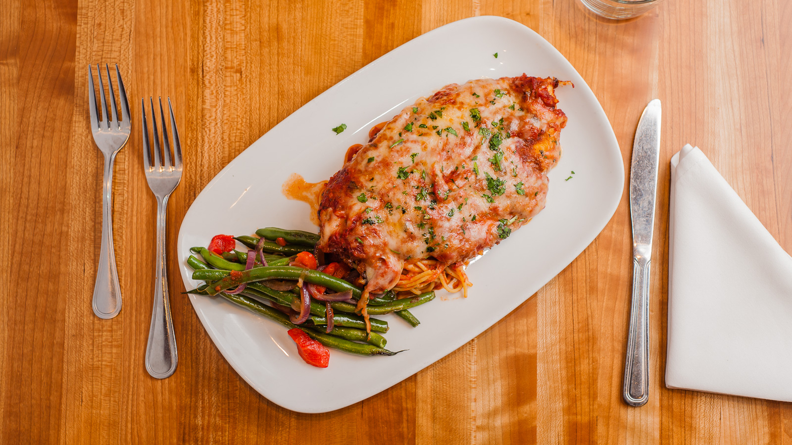

delicious chicken parmesan
chicken parmesan
recipe source: delicious chicken parmesan

image by Jose Nicdao,
CC BY 2.0,
via wikimedia Commons
ingredient
- 1/2 cup Mayonnaise
- 1/4 cup grated parmesan cheese
- 4 bonless skinless chicken breast halves
- 4 tsp. italian seasoned dry bread crumbs
equipment
- oven
- medium bowl
- baking sheet
directions
- preheat the oven to 425 degrees
- combine Mayonnaise with cheese in medium bowl
- arrange chicken breast on baking sheet, then sprinkle with bread scrumbs
- bake the chicken for 20 minutes until it's throughly cooked
this page created as acedemic actibity only